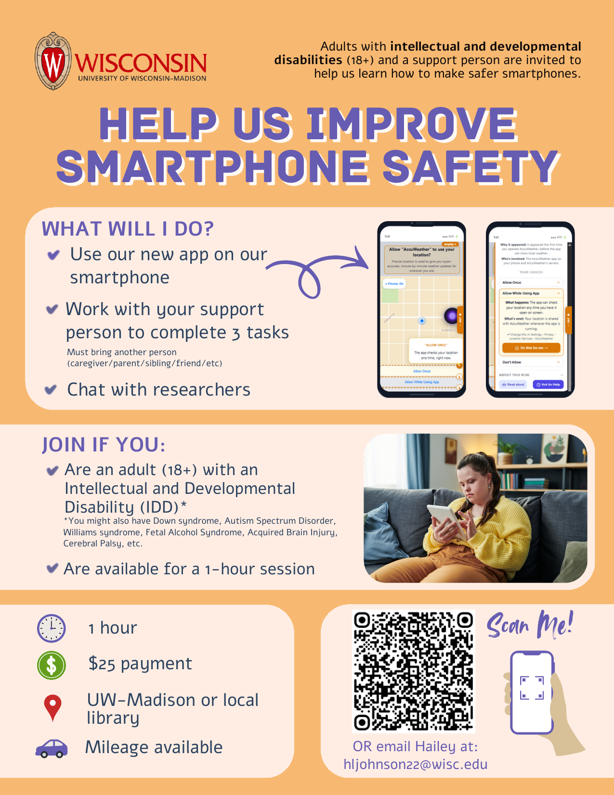
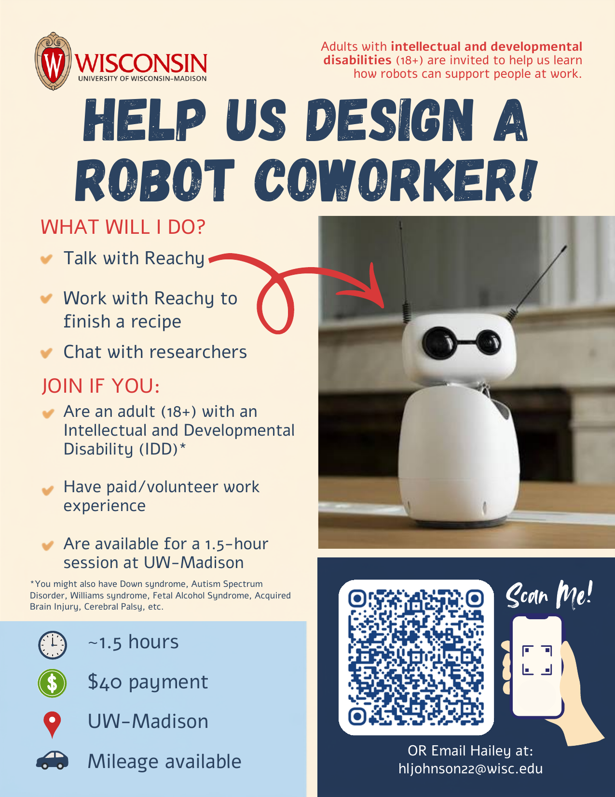
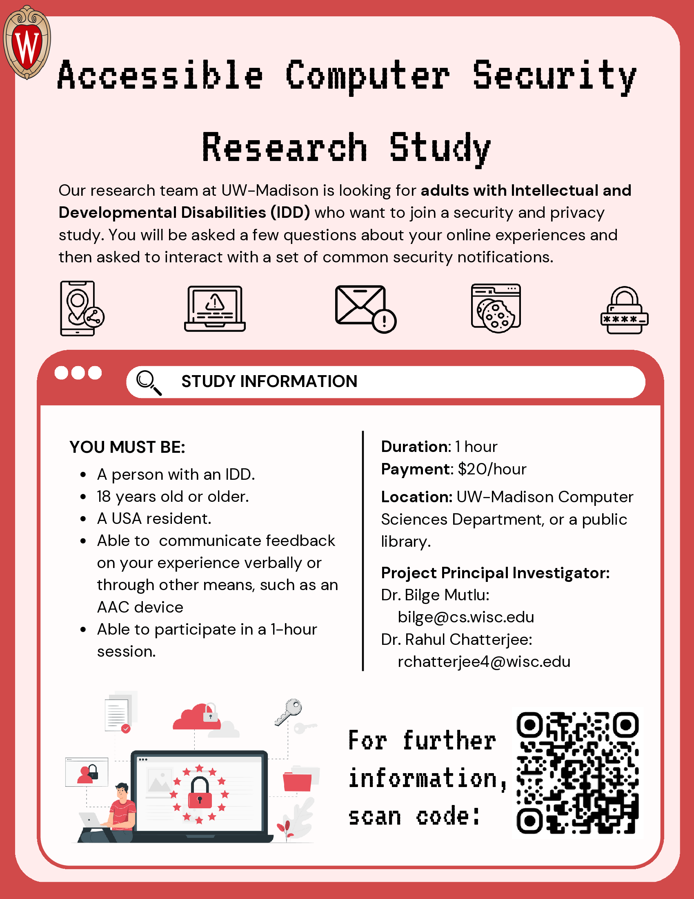
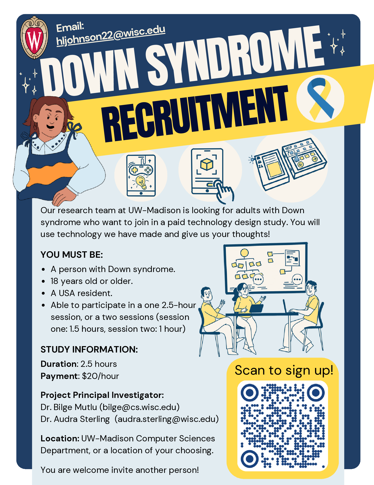
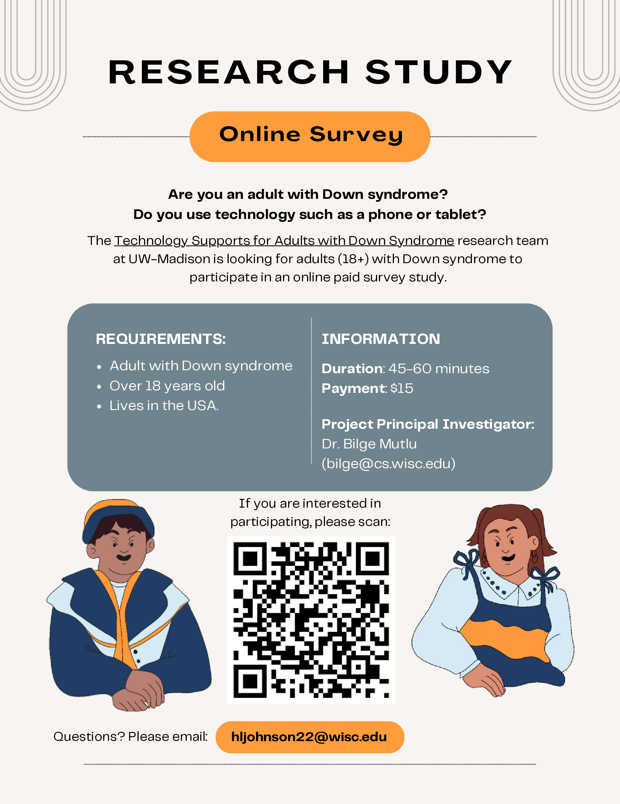
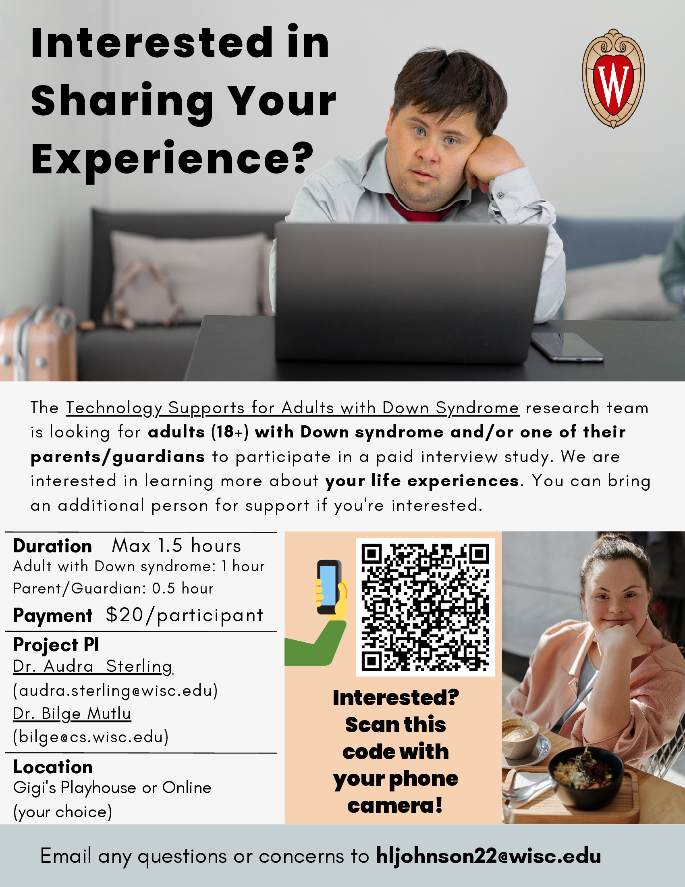

My research depends on hearing directly from the people technology is meant to serve. Whether you're an adult with Down syndrome, a family member, or a disability specialist, your perspective matters.My research is only possible because people share their experiences with me. If you're an adult with Down syndrome, a family member, or someone who works with people with disabilities, your voice matters.
All studies are reviewed and approved by the University of Wisconsin-Madison Institutional Review Board (IRB). Participation is always voluntary and you may withdraw at any time.Every study is reviewed by an ethics board at UW-Madison to make sure it's safe and respectful. You can always choose to stop participating, for any reason and at any time.
Current and Past Studies
We are recruiting adults with IDD to test a smartphone app designed to explain security and privacy notifications in plain language. In a single study session, participants encounter common phone warnings, such as permission pop-ups, spam alerts, and login prompts, and use the app to understand and respond to them. You will work alongside a trusted person of your choice (caregiver/parent/sibling/friend/etc) to make decisions together.We built a phone app that explains security and privacy warnings in simple words. We are looking for adults with intellectual or developmental disabilities to try the app during a study session and tell us what helped and what was still confusing. You and a trusted buddy (parent/caregiver/sibling/etc) will work together.

View flyer
We are recruiting adults with IDD to work alongside a small tabletop robot (Reachy Mini) during lab-simulated job tasks. The robot acts as a job-coach-like assistant, offering step-by-step guidance when needed and stepping back when not, and participants share their reactions in a short interview before and after the tasks. Support persons are welcome to attend.We are looking for adults with intellectual or developmental disabilities to try out a small friendly robot during work-like tasks. The robot gives help when you need it and stays quiet when you don't. You'll also have a short chat before and after about what worked and what you'd want to change. You can bring someone you trust.

Download flyer
This study explored how adults with Intellectual and Developmental Disabilities (IDD) encounter and navigate security and privacy notifications on computers and smartphones. Through a user study with seven adults with IDD, we identified three factors shaping understanding and decision-making. Recruitment for this study is now closed.This study looked at how adults with intellectual or developmental disabilities understand and respond to security and privacy pop-ups and warnings on phones and computers. Seven adults took part. We found three key things that shape how people make decisions about these warnings. This study is no longer recruiting.

Download flyer
This study explored how adults with Down syndrome manage money in their daily lives, and evaluated prototype budgeting tools that combined augmented reality, gamification, and tangible interfaces. Recruitment for this study has closed.This study looked at how adults with Down syndrome handle money, and tested three prototype budgeting tools: a tablet game, a camera-based money app, and a hands-on physical device. This study is no longer recruiting.

View flyer
A national Qualtrics survey investigating how adults with Down syndrome and their families use technology in daily life. This study is now complete, and findings are informing future research directions.An online survey for adults with Down syndrome and their families about how they use phones, tablets, and other technology. This study is complete, and what we learned is shaping what we study next.

View flyer
Interviews with adults with Down syndrome, their parents/guardians, and domain experts to understand how technology is currently used in daily life and what gaps exist. This foundational study informed all subsequent projects.Conversations with adults with Down syndrome, their families, and specialists about how they use technology. This was our first study, and what we learned guided everything we've worked on since.

View flyer
Your privacy and wellbeing come first. All studies are IRB-approved through the University of Wisconsin-Madison. Any data collected is anonymized and securely stored. Participation is entirely voluntary. You can withdraw at any time and for any reason without penalty.Your safety and privacy come first. Every study is approved by an ethics review board at UW-Madison. Any information you share is kept private and stored securely. You never have to participate, and you can stop at any time with no questions asked.
Have questions before signing up? Feel free to reach out directly: hljohnson22@wisc.edu